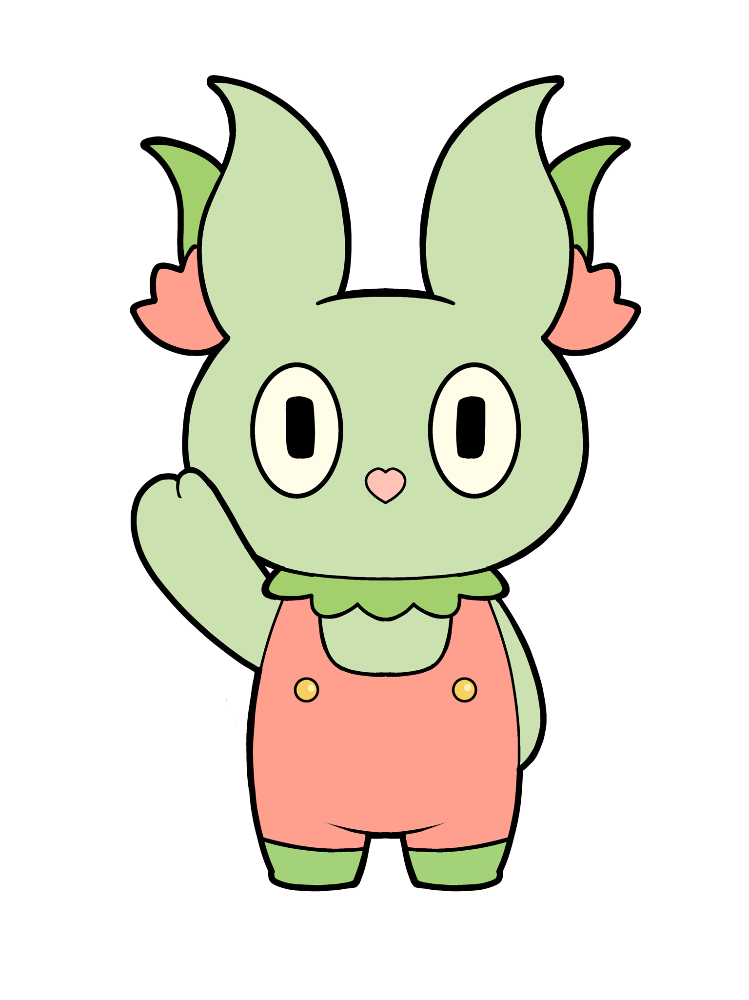
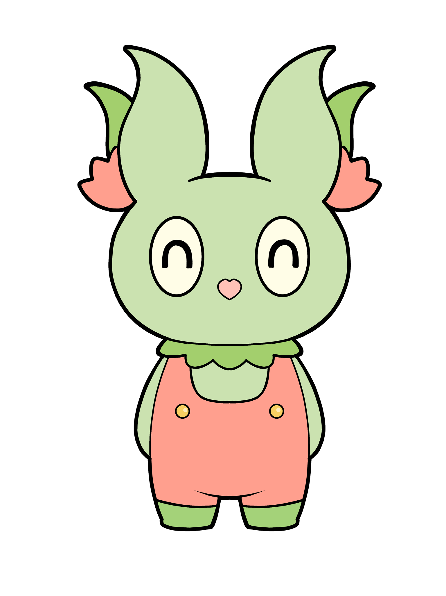
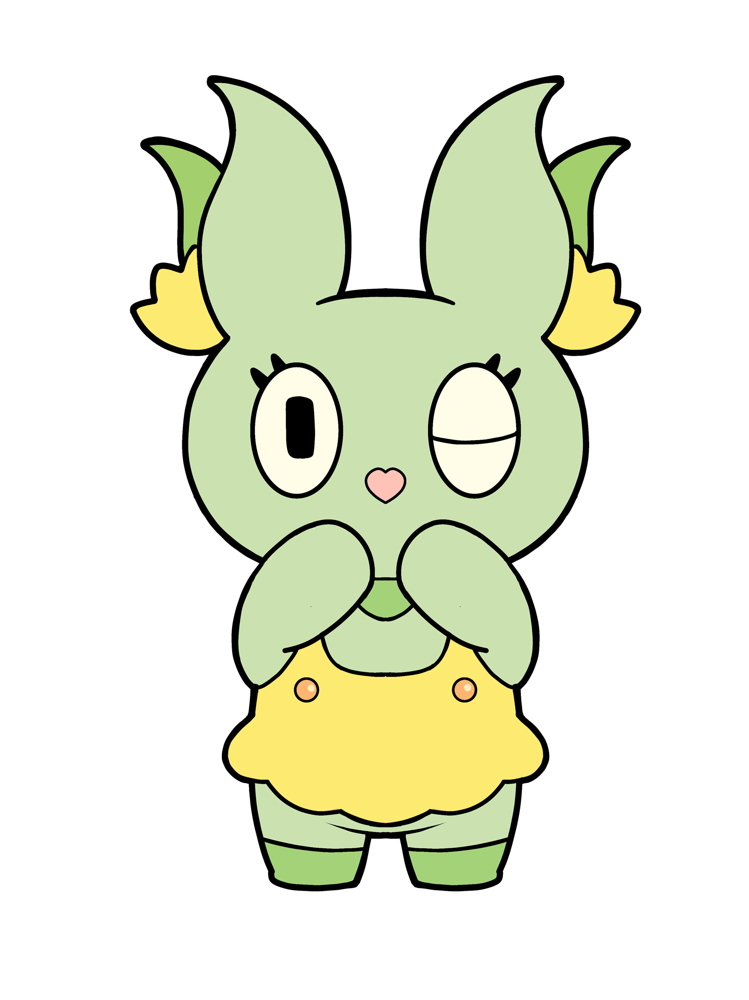
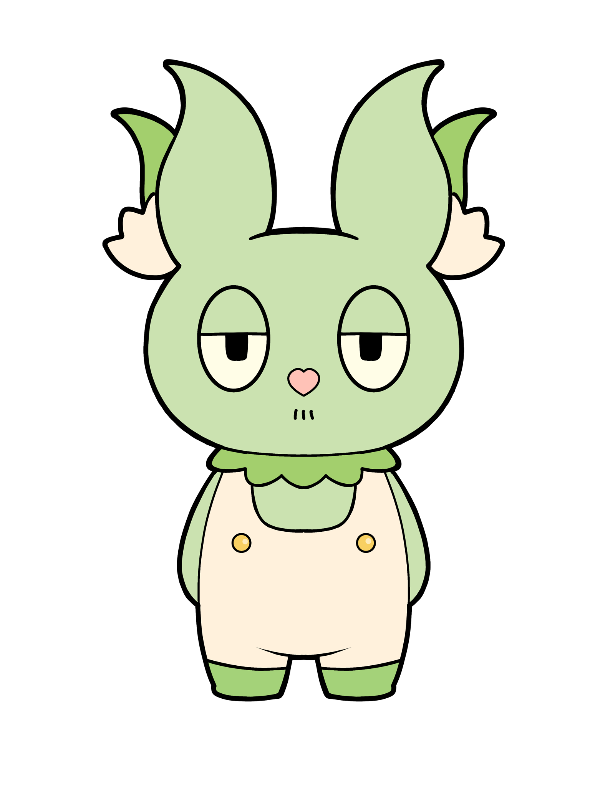

日下部ゆうえんちの歴史
現園長：日下部創也（くさかべ そうや）
現在の日下部ゆうえんちは、創設者の孫である日下部創也が運営しています。 「昔ながらの遊園地の良さを残しつつ、新しい体験を届けたい」という理念のもと、 くさぴょんを中心とした新しいイベントやアトラクションを展開しています。
マスコットキャラクター：くさぴょん

こんにちは！ぼく、くさぴょん！ 日下部ゆうえんちのマスコットキャラクターだよ。 みんなと一緒に遊園地を楽しむのが大好き！ ぜひ、僕と一緒に楽しんでいってね！
くさぴょんフレンズ



くさぴょんには、仲間たちがいるよ！
みんなで楽しい時間を過ごしているんだ。
遊園地に来たら、ぜひ会いに来てね！
僕たちのことが気になった人は、右上の検索窓で「くさぴょんフレンズ」と検索してみてね！
僕たちのくわしいプロフィールが見れるよ！